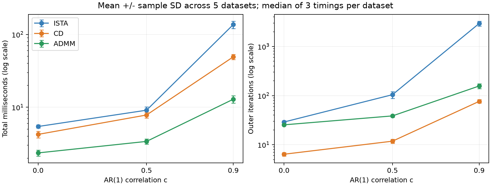
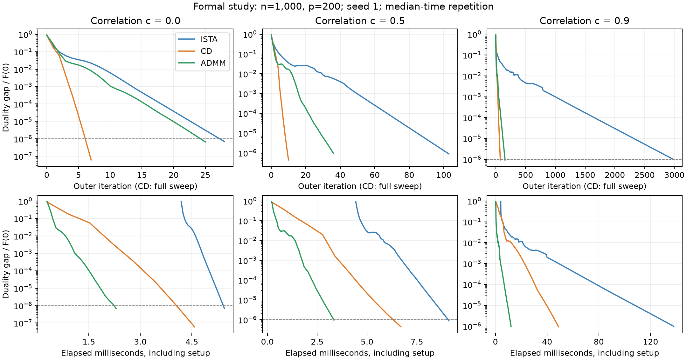
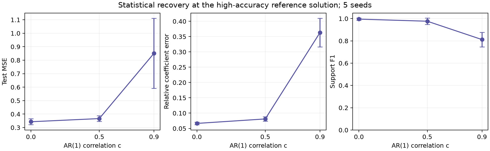

2026-11-19 · HOU Zhitian · 26017658r
18 个数据问题、54 个问题/算法组合、162 次计时求解全部达到预设相对对偶间隙 ≤10⁻⁶。预设参数未因正式结果修改。跨重复的迭代数和目标值完全一致；均值与样本 SD 按独立数据种子计算，不把计时重复当成额外数据样本。
每个数据问题先对 3 次计时取中位数，再跨 5 个合成数据种子或 3 个真实数据划分报告均值 ± 样本 SD（ddof=1）。时间包括方法准备与逐轮证书；CD 的一次迭代是一次完整扫描。单线程被请求，Apple Accelerate 实际线程数无法完全枚举。
| 数据 | 方法 | 种子数 | 毫秒 | 外层迭代 | 测试 MSE | 诊断时间占比 |
|---|---|---|---|---|---|---|
| Diabetes | ISTA | 3 | 12.105 ± 9.995 | 580.0 ± 475.3 | 3042 ± 159.3 | 69.3% |
| Diabetes | CD | 3 | 1.913 ± 1.389 | 55.7 ± 39.1 | 3042 ± 159.2 | 40.8% |
| Diabetes | ADMM | 3 | 5.280 ± 5.813 | 201.3 ± 223.7 | 3042 ± 159.2 | 58.6% |
| 合成 c=0.0 | ISTA | 5 | 5.442 ± 0.287 | 29.0 ± 1.6 | 0.3432 ± 0.022 | 16.2% |
| 合成 c=0.0 | CD | 5 | 4.240 ± 0.426 | 6.4 ± 0.5 | 0.3432 ± 0.022 | 5.5% |
| 合成 c=0.0 | ADMM | 5 | 2.361 ± 0.229 | 25.4 ± 0.9 | 0.3432 ± 0.022 | 34.1% |
| 合成 c=0.5 | ISTA | 5 | 9.109 ± 0.991 | 104.4 ± 16.8 | 0.3666 ± 0.02034 | 35.3% |
| 合成 c=0.5 | CD | 5 | 7.827 ± 0.705 | 11.8 ± 1.1 | 0.3666 ± 0.02034 | 5.4% |
| 合成 c=0.5 | ADMM | 5 | 3.397 ± 0.271 | 38.6 ± 2.1 | 0.3666 ± 0.02034 | 35.6% |
| 合成 c=0.9 | ISTA | 5 | 136.575 ± 15.906 | 2946.4 ± 346.5 | 0.8512 ± 0.2596 | 64.8% |
| 合成 c=0.9 | CD | 5 | 49.219 ± 4.041 | 76.4 ± 6.3 | 0.8512 ± 0.2596 | 5.0% |
| 合成 c=0.9 | ADMM | 5 | 12.887 ± 1.453 | 157.0 ± 18.0 | 0.8512 ± 0.2596 | 37.9% |

展示固定种子 1 下各方法的中位耗时重复。跨种子的总体结论以上表为准。

本图使用独立高精度参考解，隔离模型统计行为与求解器停止误差。三算法达到相同目标精度后，预测与恢复指标应接近；不能把更快收敛解释为改变了 LASSO 模型的统计能力。

所有求解的最大相对对偶间隙：9.994e-07；相对各自 sklearn 参考解的最大目标值差：1.385e-06。
正式汇总 CSV · 54 行逐问题中位数 · 162 行原始计时 · 环境与验证状态 · 模型与实验方案